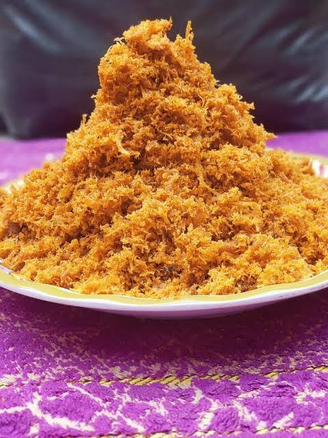
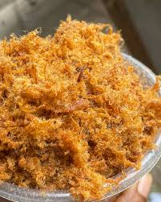
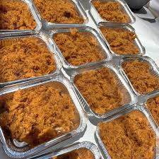

Dambun Nama – Hausa-Style Shredded Spiced Meat
Introduction
Home

Dambun Nama is a traditional Hausa delicacy made from shredded, spiced meat that’s steamed with vegetables.
Popular during Sallah, weddings, and festive occasions in Northern Nigeria, Dambun Nama is flavorful, soft,
and full of aroma. It can be prepared using cow, goat, sheep, or even poultry
(like chicken or turkey) — making it a versatile and delicious dish for any meat lover.
Ingredients
- 500g meat (cow, goat, sheep, or poultry – boneless)
- 1 teaspoon salt (or to taste)
- 1 teaspoon ginger powder
- 1 teaspoon garlic powder
- 1 onion (chopped)
- 1–2 seasoning cubes
- ½ teaspoon ground chili pepper (optional)
- 1 cup finely chopped spinach, ugu, or moringa leaves
- ½ cup sliced onions
- ½ cup grated carrots (optional)
- 3 tablespoons groundnut oil or vegetable oil
Preparation Steps
-
Boil the Meat: Cut the meat into large chunks. Add chopped onions, ginger, garlic,
seasoning cubes, and salt. Add a small amount of water and cook on medium heat until the meat becomes soft and tender.
-
Shred the Meat: Remove the cooked meat and allow to cool slightly. Shred it finely using
fingers, a mortar and pestle, or a fork. Poultry may be easier to shred by hand.
-
Steam with Vegetables: In a dry pot or steamer, add the shredded meat. Mix in chopped
vegetables (spinach, carrots, sliced onions), ground pepper, and oil. Cover the pot tightly and steam
on low heat for 10–15 minutes. Use foil under the lid to trap steam for best results.
-
Stir and Finish: Stir well to combine the spices and vegetables. Let it rest for a few
minutes, then serve.

How It’s Served
- With kunun gyada (groundnut pap)
- With tuwo (local swallow)
- With jollof rice or plain rice
- As a savory snack on its own

Traditionally, it may be wrapped in leaves or served in bowls with fresh onions and tomatoes on the side.
Home